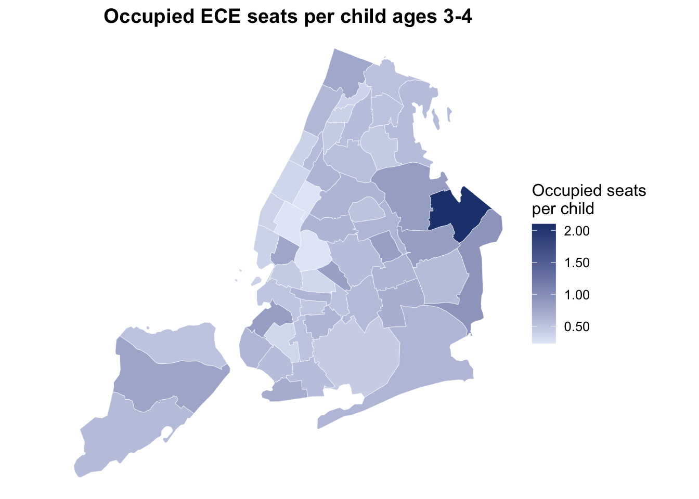
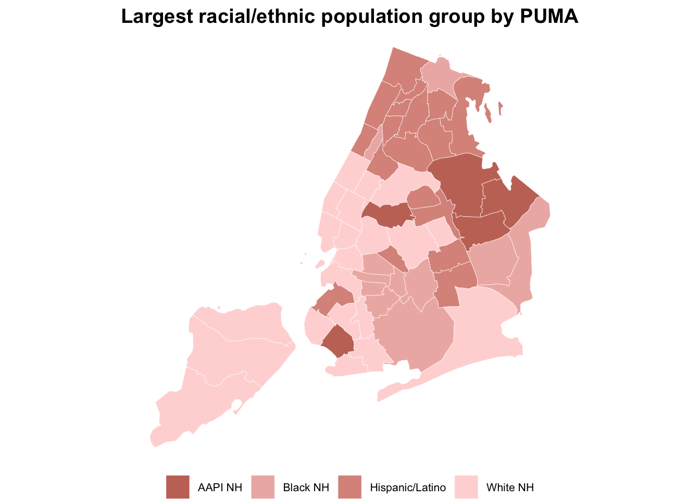
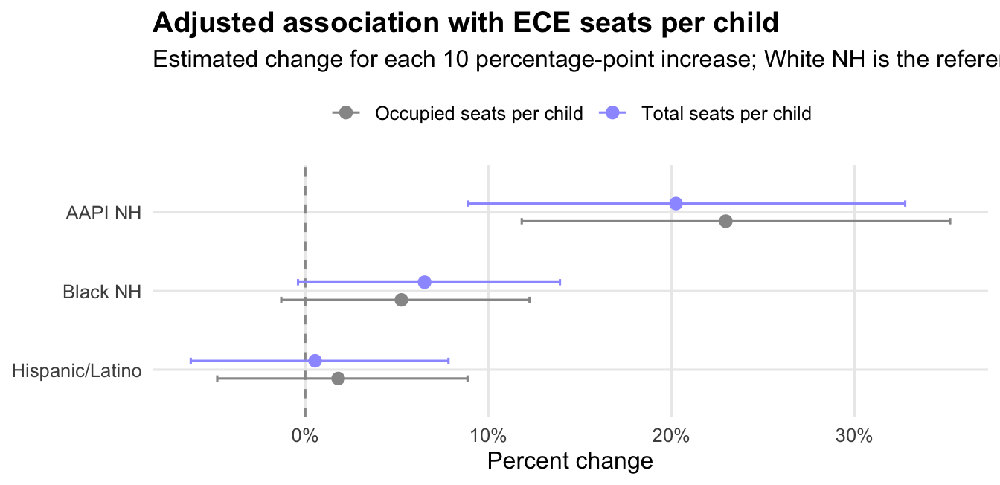

Early Childhood Education Access
KEY FINDINGS
->
ECE access varies sharply across PUMAs: occupied seats range from 0.23 to 2.10 per child ages 3-4.
->
A 10 percentage-point increase in AAPI NH population share is associated with 23.0% more occupied seats per child ages 3-4 after accounting for median household income.
->
The adjusted models do not show a clear positive association for Hispanic/Latino population share; Black NH estimates are positive but less precise.
Overview
Access to early childhood education (ECE) can depend on where a family lives. A shortage of seats in a neighborhood can make it harder for families to find care nearby, even when seats are available elsewhere in the city.
This one-pager examines whether ECE access varies by neighborhood racial and ethnic composition and household income. The outcomes are measured at the Public Use Microdata Area (PUMA) level as licensed ECE seats per child ages 3-4 and occupied ECE seats per child ages 3-4. The child denominator is estimated from 2023 New York City Department of Health and Mental Hygiene (DOHMH) vital statistics birth data.
Race and ethnicity are mutually exclusive categories based on the U.S. Census Bureau’s American Community Survey Public Use Microdata Sample (ACS PUMS): White NH, Black NH, Hispanic/Latino, AAPI NH, and AIAN/NHPI/Other/2+ NH. The combined AIAN/NHPI/Other/2+ NH group is used in public-facing PUMA composition tables and maps because the separate groups are small at this geography.
What We Found
Neighborhoods with larger AAPI NH population shares have the strongest positive adjusted association with ECE access. In the occupied-seat model, a 10 percentage-point increase in AAPI NH population share is associated with 23.0% more occupied seats per child ages 3-4 after accounting for median household income.
Black NH population share is also positively associated with seats per child, but the adjusted estimates are smaller and less precise. Hispanic/Latino population share is not meaningfully associated with higher seat access after adjustment in these models.
What disparities do we observe?
Descriptively, ECE access varies sharply across PUMAs. The citywide mean is 0.58 occupied seats per child ages 3-4, while the PUMA-level range runs from 0.23 to 2.10.
Areas with different racial and ethnic plurality groups show different average levels of access, but these descriptive comparisons combine demographics, income, geography, enrollment preferences, and the historical location of ECE providers.

| Largest group | PUMAs | Mean total seats per child ages 3-4 | Mean occupied seats per child ages 3-4 |
|---|---|---|---|
| White NH | 21 | 0.67 | 0.51 |
| Black NH | 11 | 0.81 | 0.56 |
| Hispanic/Latino | 18 | 0.75 | 0.57 |
| AAPI NH | 5 | 1.20 | 0.99 |
Do those disparities persist after accounting for relevant factors?
The adjusted models estimate log seats per child ages 3-4 as a function of race/ethnicity composition and median household income. Coefficients are converted to percent changes, so each race/ethnicity estimate represents the modeled change associated with a 10 percentage-point increase in the population share. White NH is the omitted reference composition.

| Outcome | Race/ethnicity share | Percent change | 95% CI | P-value |
|---|---|---|---|---|
| Total seats per child | Hispanic/Latino | 0.5 | -6.3% to 7.8% | 0.879 |
| Total seats per child | Black NH | 6.5 | -0.4% to 13.9% | 0.065 |
| Total seats per child | AAPI NH | 20.2 | 8.9% to 32.8% | <0.001 |
| Occupied seats per child | Hispanic/Latino | 1.8 | -4.8% to 8.9% | 0.596 |
| Occupied seats per child | Black NH | 5.2 | -1.3% to 12.2% | 0.117 |
| Occupied seats per child | AAPI NH | 23.0 | 11.8% to 35.2% | <0.001 |
The adjusted results suggest that the descriptive differences are not explained entirely by median household income. However, the model is ecological: it estimates associations across neighborhoods, not individual child participation or household-level access.
Methods
This analysis combines publicly available information on ECE seats, child population, neighborhood demographics, household income, and PUMA boundaries. ECE capacity and vacancy measures come from New York City Public Schools/Department of Education reporting on early childhood education seats. The number of children ages 3-4 is estimated from 2023 DOHMH vital statistics birth data, using two birth cohorts as a proxy for the preschool-age population. Neighborhood race/ethnicity and household income measures come from the 2020-2024 ACS 5-year PUMS, and PUMA boundaries come from NYC Department of City Planning.
All measures are summarized at the PUMA level. PUMAs are large statistical areas used for Census microdata; in New York City, the 55 PUMAs approximate community districts or combinations of community districts. The analysis does not use individual child records.
Race and ethnicity are reported as mutually exclusive groups: White NH, Black NH, Hispanic/Latino, AAPI NH, and AIAN/NHPI/Other/2+ NH. AAPI NH is based on residents who identify as non-Hispanic Asian alone in the ACS. AIAN/NHPI/Other/2+ NH combines smaller non-Hispanic race groups for public reporting at this geography.
Total access is defined as licensed ECE seats divided by the estimated number of children ages 3-4. Occupied access is defined as licensed seats minus vacant seats, divided by the estimated number of children ages 3-4. The adjusted results compare PUMAs with different racial and ethnic composition after accounting for median household income. These models describe neighborhood-level associations; they do not measure whether individual families were offered, accepted, or used a specific seat.
Data Snapshot
| Metric | Value |
|---|---|
| PUMAs | 55 |
| Children ages 3-4 (2023 DOHMH vital statistics estimate) | 173,474 |
| Total ECE seats | 122,827 |
| Occupied ECE seats | 92,970 |
| Mean total seats per child | 0.77 |
| Mean occupied seats per child | 0.58 |
| Median household income | $72,000 |
Public data sources: New York City Public Schools/Department of Education early childhood education seat and enrollment reporting; NYC DOHMH Public Use Birth Datasets, 2023; U.S. Census Bureau 2020-2024 ACS 5-year PUMS; and NYC Department of City Planning 2020 Public Use Microdata Areas.
Policy Implications
Policy responses should focus on both capacity and use. Neighborhoods with low occupied seats per child ages 3-4 may need additional seats, outreach to families, language access, transportation support, or schedule models that better match caregiver needs. Areas where seats exist but occupancy is lower may require different interventions than areas with low total capacity.
Equity monitoring should track access by geography and racial/ethnic composition together, because citywide averages can obscure neighborhood-level mismatches between child population, available seats, and actual enrollment.
Limitations
The analysis is PUMA-level and should not be interpreted as individual-level evidence. The regression models adjust for median household income but do not account for all relevant factors, including parental work schedules, program quality, language access, disability access, commute patterns, provider type, eligibility rules, or family preferences.
Seat counts and occupied seats are point-in-time administrative measures, and PUMAs can hide important variation within neighborhoods. The findings identify where disparities exist and whether they persist after a limited adjustment set; they do not establish why those disparities occur.